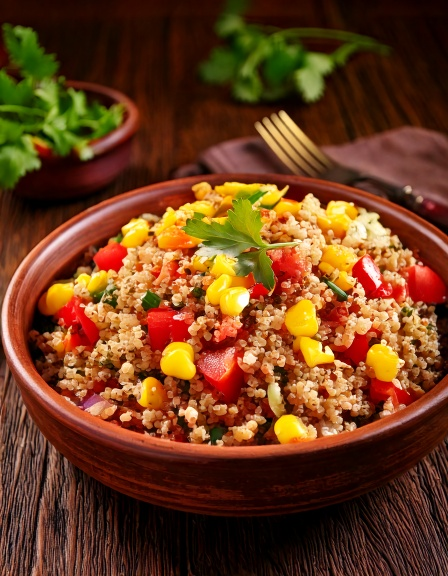

Una verdadera ensalada altiplánica boliviana hecha con quinua -- el grano por el que Bolivia es famosa -- con tomate, choclo y limón.
Información Nutricional (por porción)
250
Calorías
32g
Carbohidratos
9g
Proteína
10g
Grasa
6g
Fibra
~42
IG Est.
Por qué encaja en una dieta apta para diabéticos
La quinua es una proteína completa y un grano integral con un índice glucémico moderado, a diferencia del arroz blanco refinado o la pasta. Servirla fría en ensalada con verduras frescas y limón resulta en un plato naturalmente de digestión lenta y satisfactorio, que favorece una glucémia estable.
Ingredientes
- 2 cups370 g quinua cocida, fría
- 22 tomates, en cubos
- 1/2 cup75 g granos de choclo
- 1/41/4 cebolla morada, picada fina
- 1/4 cup10 g cilantro fresco, picado
- 3 tbsp45 ml jugo de limón fresco
- 2 tbsp30 ml aceite de oliva
Instrucciones
- Combina la quinua, el tomate, el choclo y la cebolla morada en un bol grande.
- Bate el jugo de limón con el aceite de oliva, y vierte sobre la ensalada.
- Mezcla con cuidado e incorpora el cilantro fresco.
- Sazona con sal y pimienta a gusto, y sirve fría o a temperatura ambiente.
En GlucoBeacon
Esta es una de las recetas reales de cocina Boliviana de GlucoBeacon, parte de una creciente colección de recetas regionales creada para una planificación real de comidas aptas para diabéticos. Descarga GlucoBeacon en Google Play →